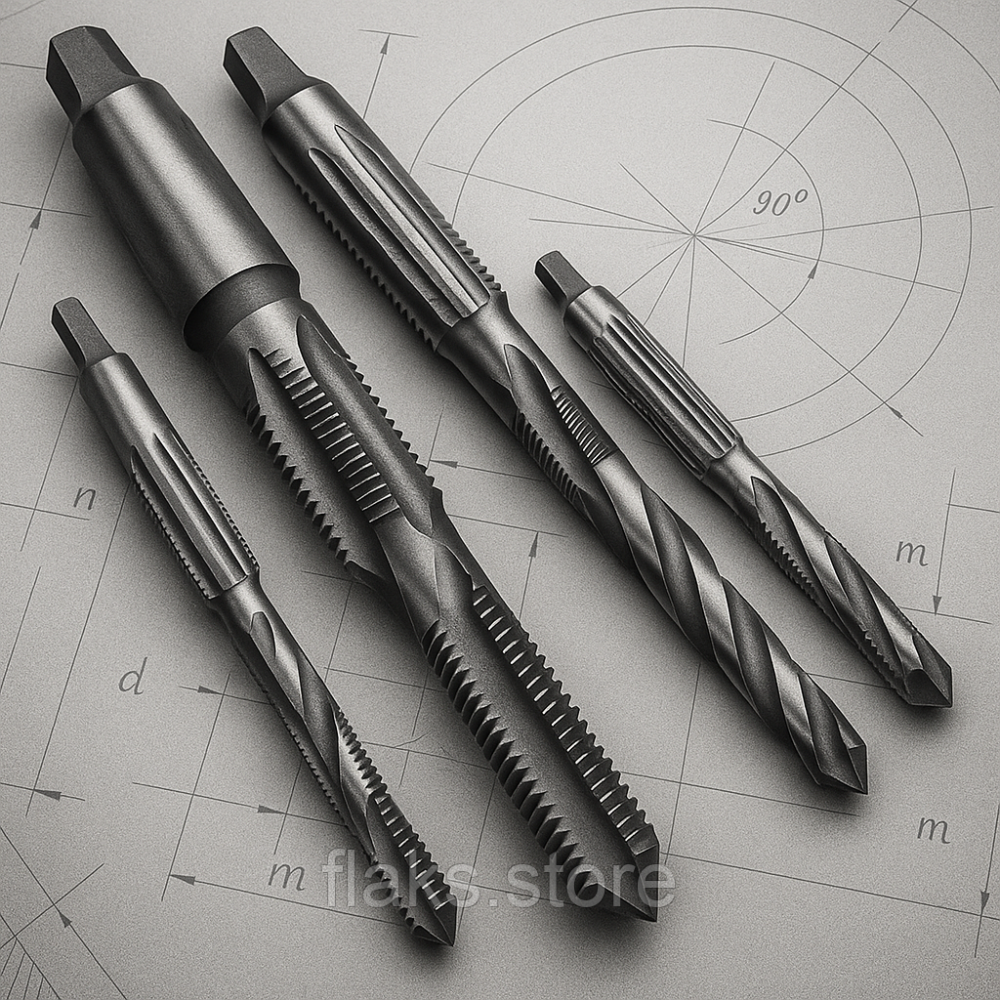

Мітчики машинно-ручні метричні правіМетчики мр метрические правые
Мітчик м/р М 72 вик.1 наскрізний 220х80 z=6Метчик м/р М 72 исп.1 сквозной 220х80 z=6
9450 UAH
без ПДВбез НДС
НаявністьНаличие: 1 шт.
КодКод: FLK-01571
ОписОписание
Мітчик м/р М 72 вик.1 наскрізний 220х80 z=6 — професійний металорізальний інструмент для нарізання внутрішньої метричної різьби в отворах. Основні параметри: різьба M72 та кількість зубів z6. В наявності 1 шт. на складі у Харкові. Ціна 9450 грн без ПДВ. Опт і роздріб, відправлення по всій Україні. Замовлення від 2 000 грн.Метчик м/р М 72 исп.1 сквозной 220х80 z=6 — профессиональный металлорежущий инструмент для нарезания внутренней метрической резьбы в отверстиях. Основные параметры: резьба M72 и число зубьев z6. В наличии 1 шт. на складе в Харькове. Цена 9450 грн без НДС. Опт и розница, отправка по всей Украине. Заказ от 2 000 грн.
ХарактеристикиХарактеристики
| Тип інструментуТип инструмента | МітчикМетчик |
|---|---|
| КатегоріяКатегория | Мітчики машинно-ручні метричні правіМетчики мр метрические правые |
| РізьбаРезьба | M72M72 |
| Кількість зубів zКоличество зубьев z | 66 |
| Напрямок різьбиНаправление резьбы | праваправая |
| Тип отворуТип отверстия | наскрізнийсквозной |
| ВиконанняИсполнение | 11 |
| СтанСостояние | новийновый |
| Код товаруКод товара | FLK-01571FLK-01571 |
| НаявністьНаличие | 1 шт.1 шт. |